Style Vault / Category / Fine art
Fine art 23
Painting and drawing traditions as the register - ink, oil, charcoal, printmaking.
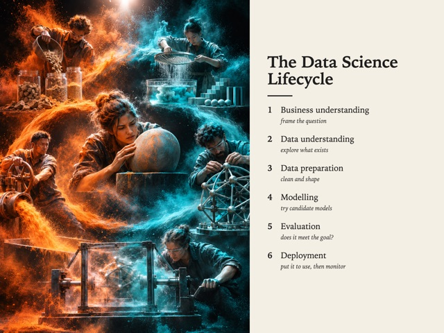
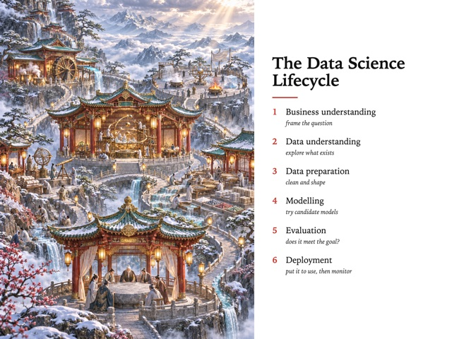
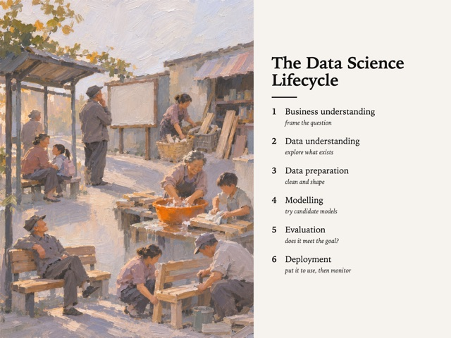
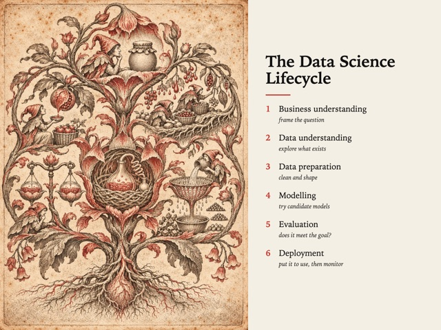
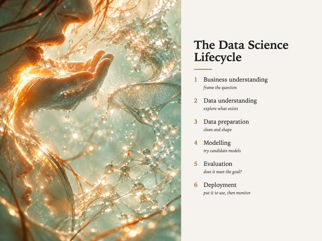
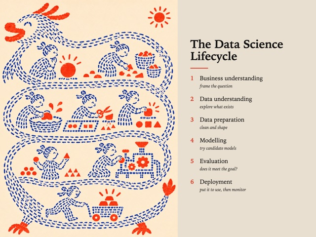
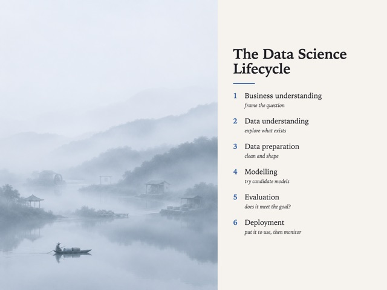
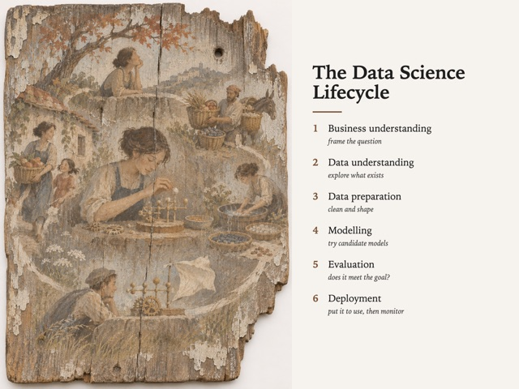
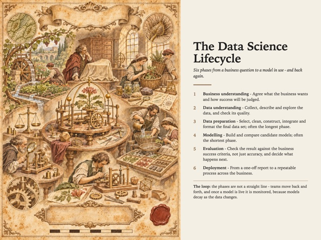
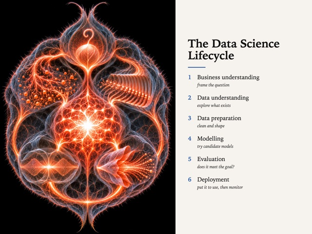
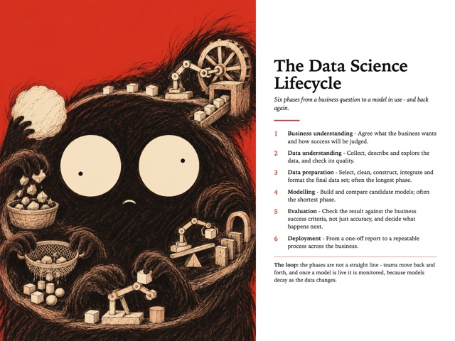
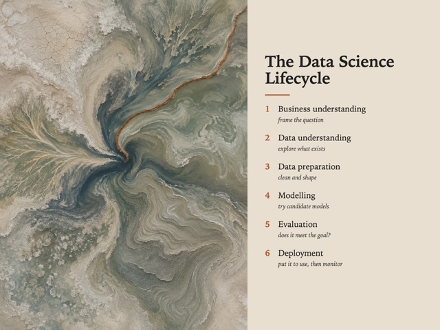
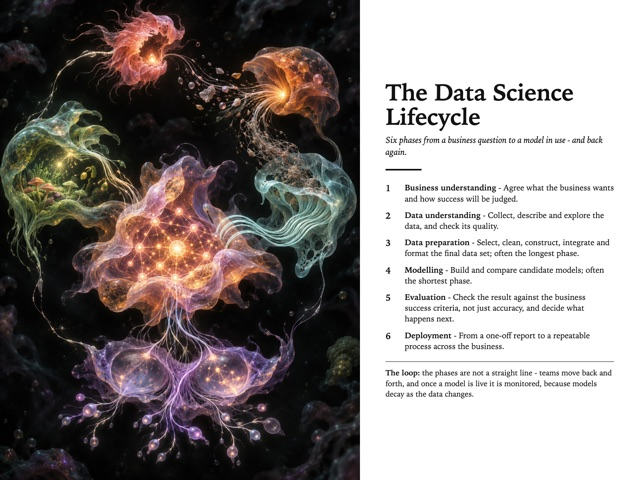
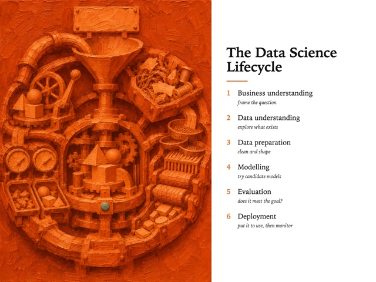
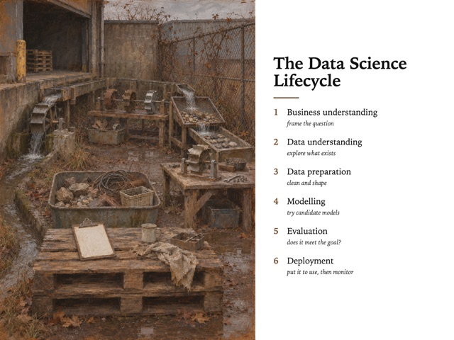
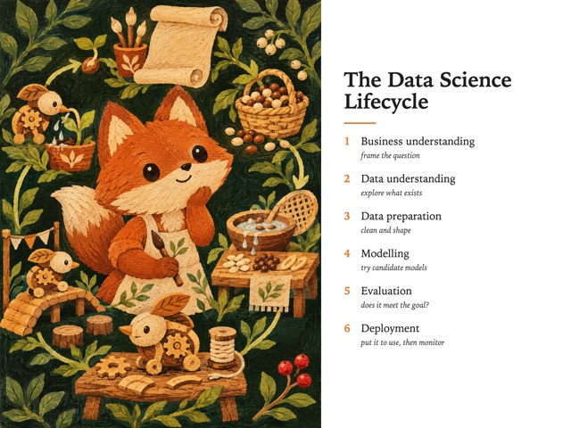
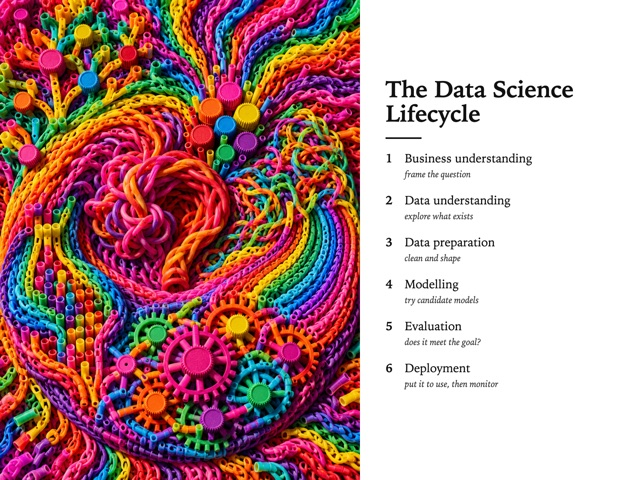
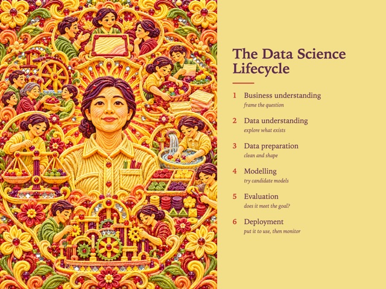
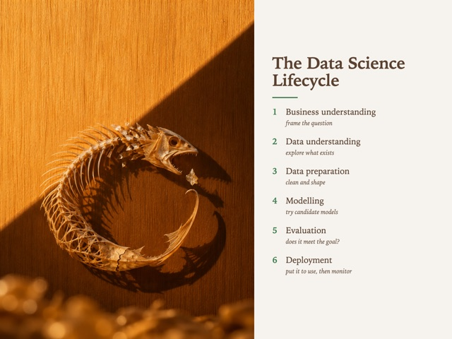
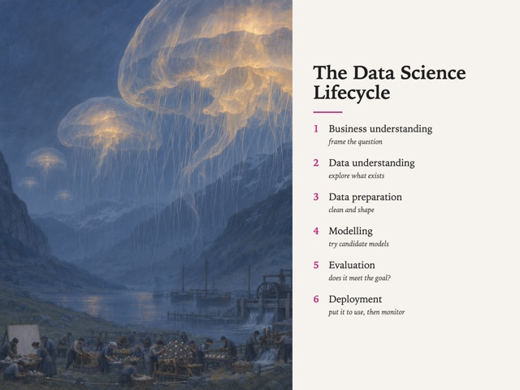
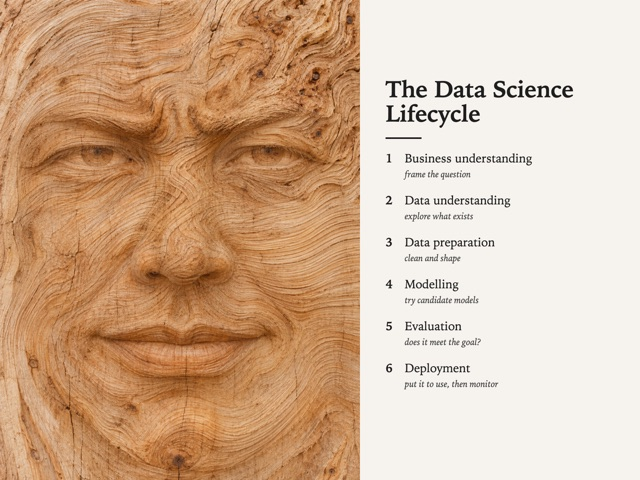
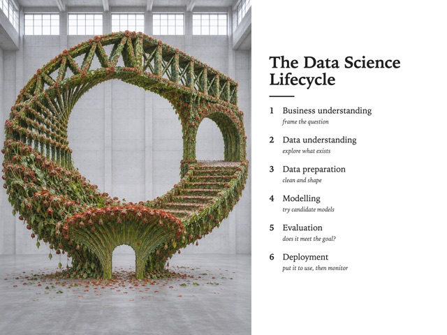
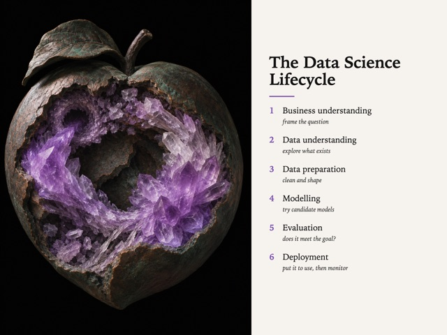
| Style | Audience | Category | Formats | Own work |
|---|---|---|---|---|
| Powderism SV-007 | Creative | Fine art, Craft / Material | poster, style-study | yes |
| Cloud Sea Xianxia SV-011 | Creative | Illustration, Fine art | illustration, poster | yes |
| Plein Air Ordinary SV-016 | Creative | Fine art | illustration, poster | yes |
| Engraved Folk Botanical SV-021 | Creative | Fine art, Illustration | field-guide, illustration | yes |
| Drowning In Light SV-024 | Creative | Fine art, Illustration | illustration, poster | yes |
| Dash-Built Folk SV-025 | Creative | Illustration, Fine art | illustration, poster | yes |
| Yijing Erasure SV-027 | Creative | Fine art, Typography | illustration, carousel | yes |
| Painted On Salvage SV-031 | Creative | Craft / Material, Fine art | illustration, poster | yes |
| Aged Specimen Plate SV-037 | Board, Creative | Illustration, Infographic, Fine art | field-guide, infographic, poster | yes |
| Ember Anatomy SV-039 | Creative | Illustration, Fine art | illustration, poster, card | yes |
| Charcoal Panic SV-041 | Bold, Creative | Fine art, Comic | illustration, card, poster | yes |
| Shoreline Abstract SV-042 | Creative | Photography, Fine art | illustration, poster | yes |
| Soft Data Organisms SV-049 | Creative | Data viz, Fine art | chart, poster | yes |
| One Hue Flood SV-058 | Bold | Fine art, Illustration | illustration, poster | yes |
| One Spot All Year SV-059 | Creative | Photography, Fine art | illustration, poster | yes |
| Canvas Weave Folk SV-060 | Creative | Illustration, Storybook, Fine art | illustration, card | yes |
| Loom Band Relief SV-063 | Creative | Fine art, Illustration | illustration, poster | yes |
| Piped Devotion SV-064 | Creative | Fine art, Illustration | illustration, poster | yes |
| Pressed By Sunlight SV-066 | Creative | Photography, Fine art | card, style-study | yes |
| Leviathan Weather SV-067 | Creative | Illustration, Fine art | illustration, poster | yes |
| Grain Speaks The Face SV-068 | Creative | Fine art, Illustration | poster, illustration | yes |
| Florist Is An Engineer SV-069 | Creative | Photography, Fine art | poster, illustration | yes |
| Mineral Wound SV-070 | Creative | Fine art, Photography | poster, illustration | yes |
No style matches.